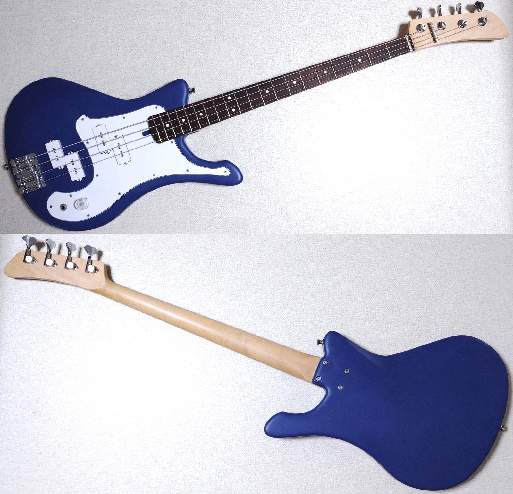

YAMAHA SBV風ベース（ボディ自作） メモ
2024年06月07日 カテゴリー：ベース関係

【ネック】
アトランシア製 ジャズベースタイプ メイプル ローズウッド指板180-240R ロングスケール（864mm 34inch）
グリップ：Uシェイプ
ナット幅：38mm
エンド幅：63.5mm
トラストロッド：ヒール側（十字ナット）
塗装：ラッカー？ クリア サテンフィニッシュ
ナット：牛骨
テンションバー：SCUD SR-GB475C
ペグ：GOTOH GB350 L4 Chrome（ペグ穴を埋めて取付）
【ボディ】
アイチ木材加工 アルダーボディ材 ベース用Aグレード YAMAHA SBVのボディをトレースし自作
塗装：ポリウレタン ネイビー サテンフィニッシュ
導電塗料：SONIC SP-01 Water-Based Shielding Paint
ピックガード：ALLPARTS JAPAN Pickguard Board ホワイト 3プライ
ブリッジ：GOTOH J510SJ-4 Chrome
ネックジョイントプレートなし、M4ローゼットワッシャー使用
ネックジョイントビス：ステンレス 皿木ねじ 4.1mm×45mm
ピックアップ：DIMARZIO DP123 BLACK → プレべ用ピックアップカバーに換装・ポールピース交換
ポールピース：鉄／ニッケルめっき M5×25mm（ダミーポールピース M5×4mm）
ポット：東京コスモス RV24 500kΩ Aカーブ 1個のみ（ハーフトーン固定）
ジャック：Switchcraft #112BX ステレオジャック（補強のためアルミプレートをピックガードに貼付）
ストラップピン：JIM DUNLOP ロックピン
全体の重さ：3.9kg → ヘッド落ち気味（地面と平行くらい）
弦：ARIAPROII AGS-600 .045 .065 .080 .100
弦高：1弦 2mm 4弦 2.5mm
ピックアップポールピース高さ（20フレットを抑えた状態）：
フロント1弦 1.0mm リア1弦 -（ダミーポールピース）
フロント2弦 1.0mm リア2弦 -（ダミーポールピース）
フロント3弦 3.5mm リア3弦 2.5mm
フロント4弦 4.5mm リア4弦 3.0mm